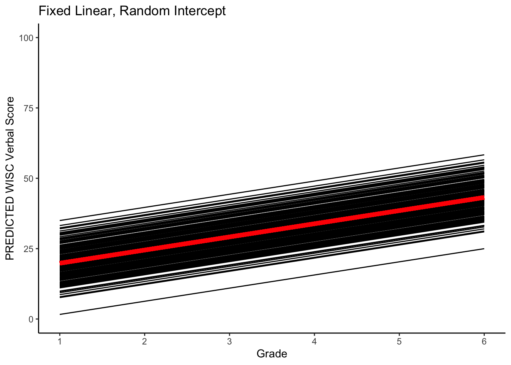

4.2 Basic Descriptives for the Repeated Measures Data
Now, just concentrating on the repeated measures of verbal ability.
4.2.1 Sample-level descriptives = all persons and occasions (Verbal Ability)
This step is useful to get a general view on what verbal ability scores look like, but note that we are ignoring Time, and not considering how the repeated measures are nested within individuals.
#sample descriptives
describe(wisclong$verb)## vars n mean sd median trimmed mad min max range skew kurtosis
## X1 1 816 30.34 11.86 28.46 29.39 11.33 3.33 72.59 69.26 0.71 0.33
## se
## X1 0.42#histogram
ggplot(data=wisclong, aes(x=verb, y=..density..)) +
geom_histogram(binwidth=2.5, fill="white", color="black") +
geom_density(color="red") +
xlab("Verbal Ability (Grade 1 to 6)")4.2.2 Sample-level descriptives across Time (Verbal Ability)
Note that our variable is actually “multivariate” because we have repeated measures.
We should really consider the time-splits when we are doing descriptives.
Thus, we are interested in Verbal Ability across Time = all persons faceted by grade.
Note that we start descriptives with MEANS and VARIANCES
#sample descriptives by occasion
#in the wide file
describe(wiscwide[,c("verb_1","verb_2","verb_4","verb_6")])## vars n mean sd median trimmed mad min max range skew
## verb_1 1 204 19.59 5.81 19.34 19.50 5.41 3.33 35.15 31.82 0.13
## verb_2 2 204 25.42 6.11 25.98 25.40 6.57 5.95 39.85 33.90 -0.06
## verb_4 3 204 32.61 7.32 32.82 32.42 7.18 12.60 52.84 40.24 0.23
## verb_6 4 204 43.75 10.67 42.55 43.46 11.30 17.35 72.59 55.24 0.24
## kurtosis se
## verb_1 -0.05 0.41
## verb_2 -0.34 0.43
## verb_4 -0.08 0.51
## verb_6 -0.36 0.75#or in the long file
describeBy(wisclong[,c("verb")],group=wisclong$grade)##
## Descriptive statistics by group
## group: 1
## vars n mean sd median trimmed mad min max range skew kurtosis se
## X1 1 204 19.59 5.81 19.34 19.5 5.41 3.33 35.15 31.82 0.13 -0.05 0.41
## ------------------------------------------------------------
## group: 2
## vars n mean sd median trimmed mad min max range skew kurtosis se
## X1 1 204 25.42 6.11 25.98 25.4 6.57 5.95 39.85 33.9 -0.06 -0.34 0.43
## ------------------------------------------------------------
## group: 4
## vars n mean sd median trimmed mad min max range skew kurtosis se
## X1 1 204 32.61 7.32 32.82 32.42 7.18 12.6 52.84 40.24 0.23 -0.08 0.51
## ------------------------------------------------------------
## group: 6
## vars n mean sd median trimmed mad min max range skew kurtosis
## X1 1 204 43.75 10.67 42.55 43.46 11.3 17.35 72.59 55.24 0.24 -0.36
## se
## X1 0.75#histogram faceted by grade
ggplot(data=wisclong, aes(x=verb)) +
geom_histogram(binwidth=5, pad = TRUE, fill="white", color="black") +
xlab("Verbal Ability") +
facet_grid(grade ~ .)## Warning: Duplicated aesthetics after name standardisation: pad
#boxplot by grade
qplot(x=factor(grade), y=verb, data=wisclong, geom="boxplot", ylab="Verbal Ability", xlab="Grade")#use factor() to convert "time" from numeric to categorical
#boxplot by grade
ggplot(data=wisclong, aes(x=factor(grade), y=verb)) +
geom_boxplot(notch = TRUE) +
stat_summary(fun.y="mean", geom="point", shape=23, size=3, fill="white") +
labs(x = "Grade", y = "Verbal Ability")## Warning: `fun.y` is deprecated. Use `fun` instead.#Density distribution by grade
ggplot(data=wisclong, aes(x=verb)) +
geom_density(aes(group=factor(grade), colour=factor(grade), fill=factor(grade)), alpha=0.3) +
guides(colour=FALSE,
fill=guide_legend(title="Grade")) +
labs(x="Verbal Ability", y="Density")## Warning: `guides(<scale> = FALSE)` is deprecated. Please use `guides(<scale> =
## "none")` instead.Notice in these plots how much “change” there is at the sample level across grades.
Is that expected?
Then to the COVARIANCES (Correlations)
Above, we looked at the means and variances. Because these are repeated measures, we also have covariances.
# Correlations
cor(wiscwide[,c("verb_1","verb_2","verb_4","verb_6")], use="complete.obs",method="spearman")## verb_1 verb_2 verb_4 verb_6
## verb_1 1.0000000 0.7184755 0.7336648 0.6563948
## verb_2 0.7184755 1.0000000 0.7552318 0.7386984
## verb_4 0.7336648 0.7552318 1.0000000 0.8016574
## verb_6 0.6563948 0.7386984 0.8016574 1.0000000see … http://stats.stackexchange.com/questions/8071/how-to-choose-between-pearson-and-spearman-correlation … Spearman is monotonic (i.e., ranks), Pearson is linear.
Corresponding plot …
#Correlations plot
pairs(wiscwide[,c("verb_1","verb_2","verb_4","verb_6")])
#in the psych library
pairs.panels(wiscwide[,c("verb_1","verb_2","verb_4","verb_6")])#see also ...
#http://gettinggeneticsdone.blogspot.com/2011/07/scatterplot-matrices-in-r.html
#look for ggally or gpairs
#from library(car)
scatterplotMatrix(~ verb_1 + verb_2 + verb_4 + verb_6,
data=wiscwide)#from library(GGally)
ggpairs(wiscwide[,c("verb_1","verb_2","verb_4","verb_6")])#nice, but needs some aesthetic clean-upNote that none of these plots show mean or variance differences - all do automatic, data-based ranges.
4.2.3 Individual-level descriptives across Time (Verbal Ability)
Note that our interest is often in individual development, rather than sample development. We need to consider how each individual is changing over time.
Thus, we are interested in Verbal Ability across Time = individual persons.
Note that we tend to do this visually rather than by looking at numbers (a collection of individual vectors).
#Using library(lattice)
#Plotting intraindividual change
xyplot(verb ~ grade, groups=id,
data=wisclong, type="l",
main="Verbal Ability Trajectories")
#Using library(ggplot2) ... see also http://ggplot.yhathq.com/docs/index.html
#Plotting intraindividual change
ggplot(data = wisclong, aes(x = grade, y = verb, group = id)) +
geom_point() +
geom_line() +
xlab("Grade") +
ylab("Verbal Ability") + ylim(0,80) +
scale_x_continuous(breaks=seq(1,6,by=1))Sometimes the “blob” gets too dense. This can be fixed by selecting only a subset of persons.
#plot a random subsample
#set seed for easy replication
set.seed(1234)
#select sample, n=20
smallsamp <- sample(wisclong$id,20)
smallsamp## [1] 71 26 156 162 100 25 26 182 151 82 20 68 96 46 144 1 166 138 53
## [20] 49wisclong_randsub <- wisclong[wisclong$id %in% smallsamp, ]
#Plotting intraindividual change
ggplot(data = wisclong_randsub, aes(x = grade, y = verb, group = id)) +
geom_point() +
geom_line() +
xlab("Grade") +
ylab("Verbal Ability") + ylim(0,80) +
scale_x_continuous(breaks=seq(1,6,by=1))
#plot the people with id<=20, in this case it is 20 persons
ggplot(data = wisclong[which(wisclong$id <=20),], aes(x = grade, y = verb, group = id)) +
geom_point() +
geom_line(data=wisclong[which(wisclong$id <= 20 & wisclong$verb !="NA"),]) +
xlab("Grade") +
ylab("Verbal Ability") + ylim(0,80) +
scale_x_continuous(breaks=seq(1,6,by=1))
Let’s clean up the aesthetics a bit.
ggplot(data = wisclong[which(wisclong$id <=20),], aes(x = grade, y = verb, group = id, color=factor(id))) +
geom_point() +
geom_line(data=wisclong[which(wisclong$id <= 20 & wisclong$verb !="NA"),]) +
xlab("Grade") +
ylab("Verbal Ability") + ylim(0,80) +
scale_x_continuous(breaks=seq(1,6,by=1)) +
guides(color=FALSE)## Warning: `guides(<scale> = FALSE)` is deprecated. Please use `guides(<scale> =
## "none")` instead.
It is also sometimes useful to look at the collection of individual-level plots.
#old-school style using library(lattice)
xyplot(verb~grade|id, data=wisclong_randsub, as.table=TRUE)
#ggplot2 style
ggplot(data = wisclong[which(wisclong$id <=20),], aes(x = grade, y = verb, group = id)) +
geom_point() +
geom_line(data=wisclong[which(wisclong$id <= 20 & wisclong$verb !="NA"),]) +
xlab("Grade") +
ylab("Verbal Ability") + ylim(0,80) +
scale_x_continuous(breaks=seq(1,6,by=1)) +
facet_wrap( ~ id)Some other aesthetics to get to the formal APA style (note: publication data viz is evolving).
#ggplot version .. see also http://ggplot.yhathq.com/docs/index.html
ggplot(data = wisclong_randsub, aes(x = grade, y = verb, group = id)) +
geom_point() +
geom_line() +
xlab("Grade") +
ylab("WISC Verbal Score") + ylim(0,100) +
scale_x_continuous(breaks=seq(1,6,by=1)) +
#title
ggtitle("Intraindividual Change in Verbal Ability") +
#theme with white background
theme_classic() +
#increase font size of axis and point labels
theme(axis.title = element_text(size = rel(1.5)),
axis.text = element_text(size = rel(1.2)),
legend.position = "none")
Saving the plot file. See also … http://www.cookbook-r.com/Graphs/Output_to_a_file/
#ggsave(filename = default_name(plot), plot = last_plot(), device = default_device(filename),
# path = NULL, scale = 1, width = par("din")[1], height = par("din")[2],
# units = c("in", "cm", "mm"), dpi = 300, limitsize = TRUE, ...)
ggsave(filename = "wiscverbal.png", width = 5, height = 5, dpi=300)Now we have a good set of strategies to apply when looking at new longitudinal data.
Assignment 2 is going be so much fun!
Thank You For Playing!